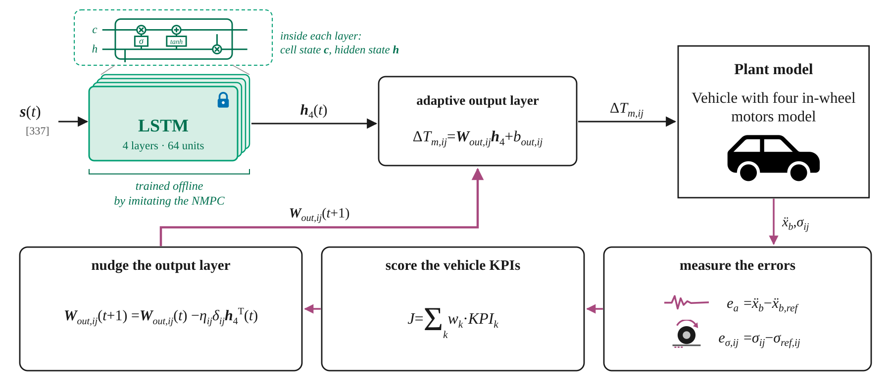

The problem
In electric vehicles with one motor per wheel, torque can be modulated within a few milliseconds, wheel by wheel. This makes two things possible: limiting wheel slip when grip drops (traction control) and damping the acceleration oscillations caused by bumps and road irregularities (longitudinal comfort).
In the literature the two goals are handled by separate controllers. Nonlinear model predictive control (NMPC), which can exploit a preview of the road and of the grip ahead of the vehicle, could handle both together, but it solves an optimisation problem at every step and is too demanding for real-time automotive hardware.
Control architecture
I designed a single controller for traction and comfort, replicated on both axles. For each wheel the torque correction is computed by the NMPC or, in the real-time version, by the adaptive LSTM neural network that replaces it. The vehicle model used in simulation was validated against experimental data collected on the test vehicle.

The NMPC is developed with acados: the solver is generated as C code and integrated into Simulink as an S-function. The weights of the cost function are tuned with a genetic algorithm coupled with the simulation.
From the NMPC to the neural network
To bring the behaviour of the NMPC onto real hardware I used imitation learning: the NMPC acts as the "expert", generates a dataset of manoeuvres, and a network learns to reproduce its decisions. I compared three architectures: a feed-forward network (MLP), a recurrent one (LSTM) and, to my knowledge for the first time in vehicle dynamics control, a selective state-space network (Mamba).
The chosen network is a 4-layer LSTM with 64 units, which reproduces the NMPC torque correction with a coefficient of determination of 0.85. With SHAP analysis I checked which inputs drive its decisions in the different driving conditions, to make the controller interpretable rather than a "black box".
Online retraining
A network trained offline may face conditions it never saw during training. For this reason I developed an online retraining strategy: the LSTM layers stay frozen and only the output layer of each wheel is updated, driven by a loss function that combines the key performance indicators (KPIs) measured in closed loop.
Unlike existing adaptive schemes, the NMPC does not need to run in parallel as a reference: the network corrects itself directly from the errors measured on the vehicle.

Simulation results
In a manoeuvre with a bump and a drop in grip, the NMPC and the LSTM reduce the acceleration KPIs by 60–70% and the slip KPIs by 76–89% compared with the uncontrolled vehicle. The LSTM gets close to the ideal NMPC and does better than an NMPC simplified to run in real time. In a Monte Carlo analysis over 360 scenarios with varied parameters, the adaptive network improves the comfort KPIs in more than 91% of the cases and the slip KPIs in almost all of them.

Vehicle tests
The networks were implemented on a dSPACE MicroAutoBox III control unit on board the Politecnico di Torino test vehicle, which has four in-wheel motors. The computation time of the network stays between 2.99 and 3.23 ms, well within the 5 ms sampling step.
In the most significant test the vehicle accelerates over a 4 m low-grip section, twice as long as the longest sections seen in training. Without control the wheel slips heavily; the static network reduces the slip error by 61%, the adaptive one by 87%. The adaptive network also compensates for a wrong slip reference deliberately fed as an input, because retraining is based on the measured error.
What I learned
I am very satisfied with this work, because it took me from theory all the way to the real vehicle. I learned a lot about training neural networks, from data preparation to the choice of architecture, and about what it takes to run model-based controllers such as NMPC in real time: computation times, model simplifications and the step from simulation to hardware.